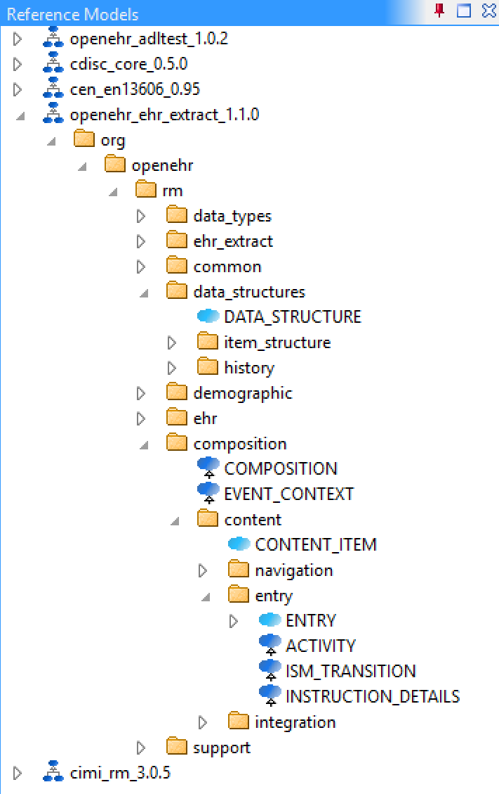
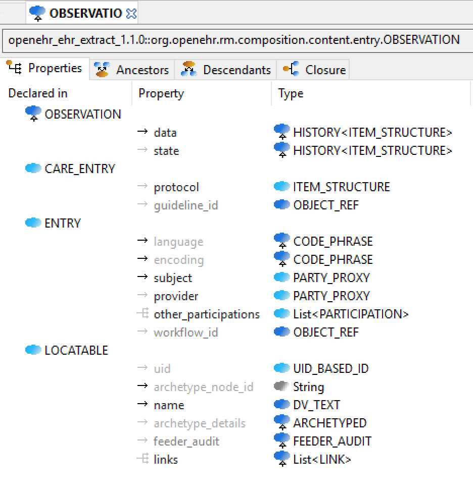
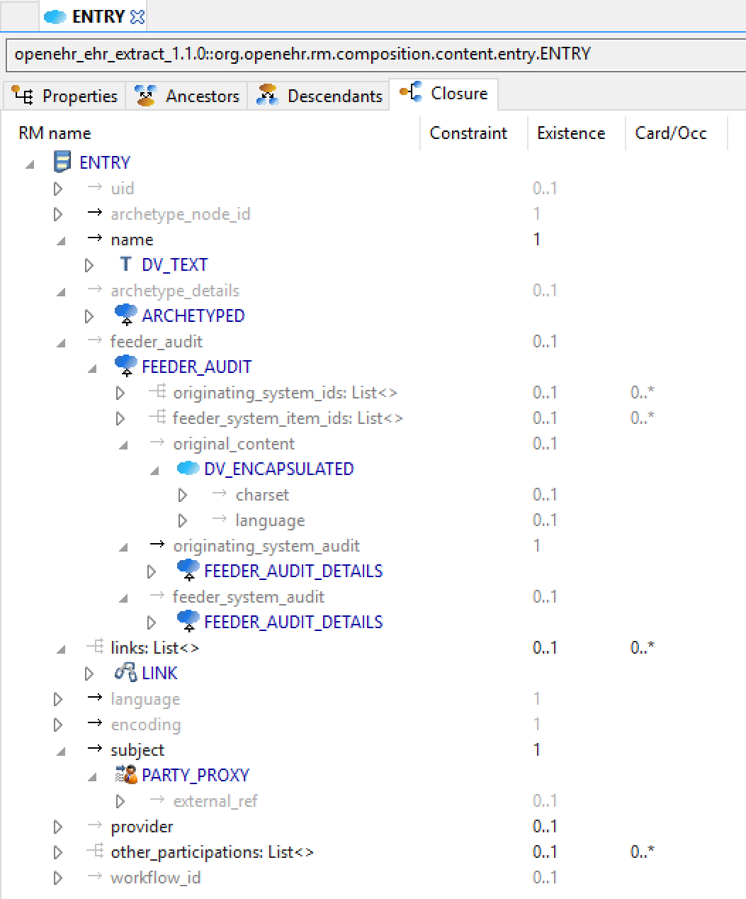

BMM in Use
BMM schemas as used in the openEHR ADL Workbench (AWB) provide an illustration of their use and visualisation. The following screenshot shows the BMM schema configuration dialog in the AWB, including some meta-data, validation status etc, and also the schema nesting structure.

The screenshot below shows a number of BMMs loaded into the AWB, including some of the packages and classes for the 'openehr_ehr_extract_1.1.0' model.

The following shows a single class in the inheritance-flattened properties view, otherwise known as the 'flat view'. The structure of the class as properties, types, multiplicities, inheritance etc are all provided by the in-memory BMM classes.

The following shows a class in a 'closure' view, which is a computed reachability graph of a fully inheritance-flattened class and all properties, including recursive references.

One of the main uses of the BMM in the ADL Workbench and other similar tools is to provide a computable form of the information model ('reference model' in openEHR) for use with archetypes. The following shows an archetype for which each node has its RM class shown (in colour), and additionally, the inclusion of non-archetyped attributes from the classes of the archetype nodes.